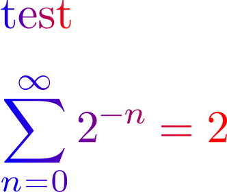

MetaPost provides shading functions making it easy to fill a path with linear or circular shading.
In this simple example, we show how they can be used in conjunction with the outlinetext function and && path combination operator to fill text or equations with a color gradient.
-
\setupbodyfont[32pt] \definecolor[Colour1][h=FF0000] \definecolor[Colour2][h=880088] \definecolor[Colour3][h=0000FF] \define[1]\ShadedText% {% \startuseMPgraphic{shade_text} picture ot ; ot := outlinetext("#1") ; % Get the outpline of each cymbol path p ; % Define a new path p := (0,0) -- (0,0); for i within ot : % Loop over the symbol outlines p := p && pathpart i ; % Combine p with the new outline endfor fill p && cycle % Fill the path p... withshademethod "linear" % ... with a linear shading... withshadedirection (1.,0.) withshadestep ( % ... going from Colour1 to Colour2... withshadefraction .5 withshadecolors (\MPcolor{Colour1}, \MPcolor{Colour2}) ) withshadestep ( withshadefraction 1 % ... then from Colour2 to Colour3 withshadecolors (\MPcolor{Colour2}, \MPcolor{Colour3}) ) ; \stopuseMPgraphic \useMPgraphic{shade_text}{}% } \starttext \startTEXpage \ShadedText{test} \blank[1em] \ShadedText{\dm{\sum_{n=0}^{\infty} 2^{-n} = 2}} \stopTEXpage \stoptext
- 
A slightly simpler approach is to use lmt_outline:
-
\setupbodyfont[32pt] \definecolor[Colour1][h=FF0000] \definecolor[Colour2][h=880088] \definecolor[Colour3][h=0000FF] \define[1]\ShadedText{% \startuseMPgraphic{shade_text} draw lmt_outline [ kind = "outline", text = "#1", ] withshademethod "linear" withshadedirection (1.,0.) withshadestep ( withshadefraction .5 withshadecolors (\MPcolor{Colour1}, \MPcolor{Colour2}) ) withshadestep ( withshadefraction 1 withshadecolors (\MPcolor{Colour2}, \MPcolor{Colour3}) ) ; \stopuseMPgraphic \useMPgraphic{shade_text}{}% } \starttext \startTEXpage \ShadedText{test} \blank[big] \ShadedText{\dm{\sum_{n=0}^{\infty} 2^{-n} = 2}} \stopTEXpage \stoptext
-